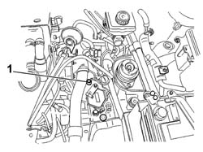
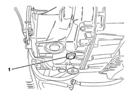
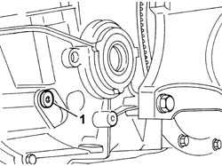
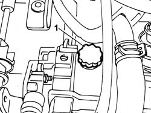

0010T45 AUTOMATIC TRANSMISSION FLUID CHECK LEVEL AND TOP UP IF NECESSARY
- Path
- Procedures > 00 MAINTENANCE > 0010 NEW VEHICLES AND MAINTENANCE > 0010T VEHICLE FLUIDS > 0010T45 AUTOMATIC TRANSMISSION FLUID CHECK LEVEL AND TOP UP IF NECESSARY
- Kind
- repair procedure (removal / refitting; the operation number is the code)
- Applies to
- all engines; all production periods
- Interactive page
- https://sloeber94.github.io/elrnDB-fUlss/en/#/179006822
Applies to: engines: 2.0 16v, 2.0 16V JTD; all production periods
Position the vehicle on a lift.
Place the gear lever in position "P" and lower the handbrake lever.
Disconnect all the high energy absorption components.
Connect the EXAMINER or other diagnostic equipment to the diagnostic socket and select the operating mode for the control unit in question.
1. Remove the filler plug and add 0.5 litres of the recommended lubricant.
Description | Q.ty | Component | Type | Classification | |
|---|---|---|---|---|---|
. | TUTELA GI/A | AUTO TRANSMISSION FLUID | Oil |

Applies to: engines: 2.0 16v, 2.0 16V JTD; all production periods
With the engine running, select the parameter measurement function and wait for the temperature of the fluid to reach between 58°C and 68°C.
1. Remove the level plug and check that the fluid comes out continuously; if the result of this check is positive, refit the plug and tighten it the recommended torque replacing the seal.
Value daNm | Fastening | Component | dia | |
|---|---|---|---|---|
. | 2.4 | Automatic transmission fluid level check plug | AUTO TRANSMISSION FLUID |

Applies to: engines: 2.0 16v, 2.0 16V JTD; all production periods
If the temperature of the fluid is between 58°C and 68° and after having removed the level plug, rather than in a constant stream, the oil comes out drop by drop or even not all, switch off the engine and let it cool down.
Add 0.5 litres of recommended lubricant and repeat the procedure described above until there is a constant stream.
Applies to: engines: 3.0 24V V6; all production periods
- Position the vehicle on a lift.
Op. 7055B54 UNDER ENGINE PROTECTION/GUARD - R.R.
- Check that there are no problems with the automatic transmission using the diagnostic equipment.
- Connect the EXAMINER or other diagnostic equipment to the diagnostic socket and check that there are no problems with the automatic transmission.
- Place the gear lever in position (P) with the handbrake released.
- Disconnect the high electrical absorption equipment.
- Select the parameters function on the diagnostic equipment.
- Check that the temperature of the fluid is below 55°C, otherwise leave it to cool down.
- Press the brake pedal.
- Start the engine (idling), move the gear lever into all the positions and return it to position (P).
1. With the engine running and the temperature of the oil at 55 ± 1°C, undo the level plug.

Applies to: engines: 3.0 24V V6; all production periods
- Let the oil reach a temperature of 60°C ± 1°C and check the possible conditions.
- Correct oil level:
- The oil comes out of the opening in the level plug. If this is the case, refit the level plug and tighten to the recommended torque.
 | Value - daNm | Fastening | Component | Ø |
|---|---|---|---|---|
1 | 2.5 | Plug | AUTOMATIC TRANSMISSION FLUID - Change |
- Insufficient oil level:
- The oil does not come out of the opening in the level plug. In this case, refit the level plug without tightening it and carry out the procedure described below.
Op. 5010B18 HEATING VENTILATION UNIT AIR INTAKE - R+R
Op. 1048A47 SLEEVE FROM RIGID PIPE TO THROTTLE BODY - R R
See descriptions
1. Remove the air intake assembly from the gearbox casing.

Applies to: engines: 3.0 24V V6; all production periods
- Top up, introducing about 0.5 litres of new oil through the air intake opening.
 | Description | Qty. | Component | Type | Classification |
|---|---|---|---|---|---|
. | TUTELA GI/A | AUTOMATIC TRANSMISSION FLUID |
- With the engine running and the temperature of the oil at 55 ± 1°C, undo the level plug.
- Let the oil reach a temperature of 60°C ± 1°C and check that the oil comes out of the opening in the level plug then refit the level plug and tighten to the recommended torque.
| Value - daNm | Fastening | Component | Ø |
|---|---|---|---|---|
. | 2.5 | Plug | AUTOMATIC TRANSMISSION FLUID - Change |
- Fit the air intake assembly, inserting the metal part first (using an 18 mm diameter drift) and then the plastic part.
See descriptions
Op. 1048A47 SLEEVE FROM RIGID PIPE TO THROTTLE BODY - R R
Op. 5010B18 HEATING VENTILATION UNIT AIR INTAKE - R+R
Op. 7055B54 UNDER ENGINE PROTECTION/GUARD - R.R.
-
Applies to: engines: 2.0 16v, 2.0 16V JTD, 2.2 16V JTD; all production periods
AUTOMATIC TRNASMISSION FLUID- Check level and top up if necessary
See
Op. 1048A11 AIR CLEANER ASSEMBLY - R R FOR VERSIONS WITH AUTOMATIC TRANSMISSION
Raise the vehicle on a lift with the gear lever in position P and the handbrake released.
Disconnect all the high energy absorption components.
Connect the EXAMINER to the diagnostic socket and select the operating mode for the control unit in question.
Type | Description | Quantity |
|---|---|---|
AUTO TRANSMISSION FLUID | TUTELA GI/A | 0.5 litres |
Position a container to collect the automatic transmission fluid.
1. Undo the filler cap (1a) and remove it. Do not unscrew the bolt (1b) under any circumstances.
Applies to: engines: 2.0 16v, 2.0 16V JTD, 2.2 16V JTD; all production periods
See
Op. 7055B54 UNDER ENGINE PROTECTION/GUARD - R.R.
Start the engine (idling), move the gear lever into all the positions and return it to position (P).
Let the oil reach a temperature of between 58° C and 68° C.
Then, with the engine running:
Undo the level cap (a) on versions with a steel oil level/drain plug;
Undo the level cap (b) on versions with a polyammide oil drain plug.
Applies to: engines: 2.0 16v, 2.0 16V JTD, 2.2 16V JTD; all production periods
If the oil drains continuously then the level is correct: wait for the oil to drip, drop by drop, then refit the level cap fitted with a new gasket, tightening it to the recommended torque.
If the temperature of the fluid is between 58°C and 68°C and, after having removed the level cap, rather than in a constant stream, the oil comes out drop by drop or even not all, switch off the engine and let it cool down.
Tighten the level cap, top up with a further 0.5 litres and resume the checking procedure.
Wait for the gearbox to cool down and screw in the level cap (a) on versions with a steel drain/oil level plug replacing the gasket with a new one and (b) for versions with a polyammide oil drain plug, replacing the gasket with a new one tightening to the recommended torque.
Applies to: engines: 2.0 16v, 2.0 16V JTD, 2.2 16V JTD; all production periods
Value daNm | Fastening | Component | dia |
|---|---|---|---|
3.3 | Automatic transmission fluid level check plug | AUTO TRANSMISSION FLUID |
Value daNm | Fastening | Component | dia |
|---|---|---|---|
2.4 | Automatic transmission fluid level check plug | AUTO TRANSMISSION FLUID |
See
Op. 7055B54 UNDER ENGINE PROTECTION/GUARD - R.R.
Lower the vehicle.
Refit the filler cap fitted with a new gasket and tighten to the recommended torque.
Value daNm | Fastening | Component | dia |
|---|---|---|---|
2.4 | Oil filler plug | AUTO TRANSMISSION FLUID |
See
Op. 1048A11 AIR CLEANER ASSEMBLY - R R FOR VERSIONS WITH AUTOMATIC TRANSMISSION
With the operation completed, update the oil wear gauge.
Remove the vehicle from the lift.
Topics linked from this page (4)
- 1048A11 AIR CLEANER ASSEMBLY - R R FOR VERSIONS WITH AUTOMATIC TRANSMISSION
- 1048A47 SLEEVE FROM RIGID PIPE TO THROTTLE BODY - R R
- 5010B18 CLIMATE CONTROL UNIT AIR INTAKE - R.R.
- 7055B54 UNDER-ENGINE GUARD - R R
Topics that link to this page (11)
- 0010T44 CHANGE AUTOMATIC TRANSMISSION FLUIDS
- 1004B14 POWER UNIT WITH AUTOMATIC TRANSMISSION R + R
- 1008C33 BRACKET ON ENGINE FOR LOWER REACTION ROD - R.R.
- 2130A38 AUTOMATIC TRANSMISSION FLUID HEAT EXCHANGER - R + R - INCLUDING LEVEL TOP UP IF NECESSARY
- 2130A10 AUTOMATIC TRANSMISSION - R + R
- 2130B36 AUTOMATIC TRANMISSION VALVE COVER R R
- 2130B40 GEAR SELECTION SOLENOID UNIT - R R
- 2130B12 AUTOMATIC TRANSMISSION TORQUE CONVERTER - R+R
- 2135B72 ELECTRONIC AUTOMATIC TRANSMISSION INPUT RPM SENSOR - R R
- 2135B58 ELECTRONIC AUTOMATIC TRANSMISSION SYSTEM WIRING - R R
- 2135B74 ELECTRONIC AUTOMATIC TRANSMISSION OUTPUT RPM SENSOR - R R